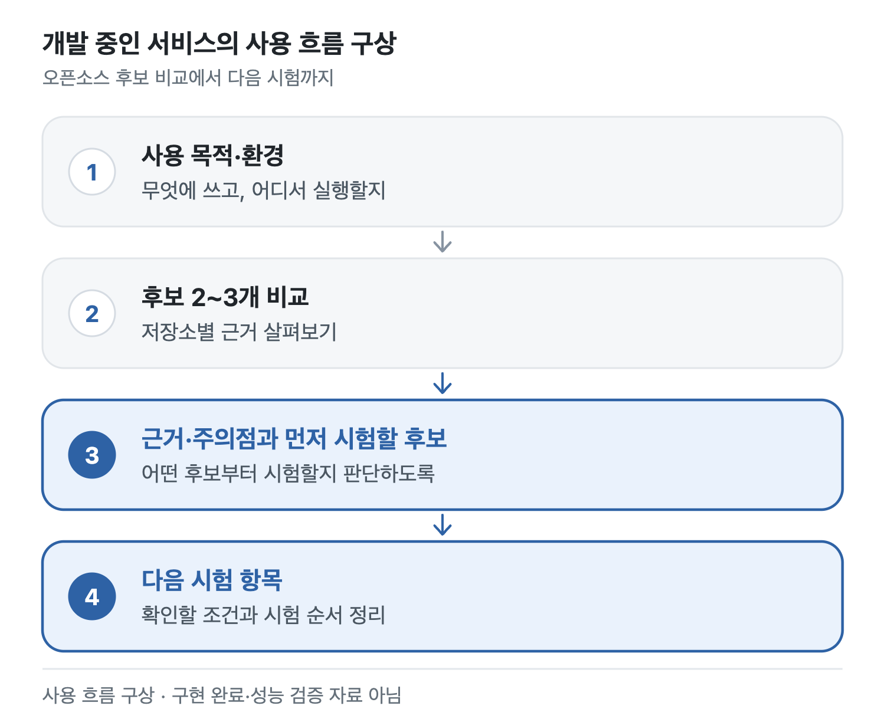

안녕하세요, 신혜리입니다.
웹과 AI 서비스를 개발합니다. 웹 개발을 가르친 뒤, 팀원들과 오픈소스 저장소 진단 서비스 ODOC를 만들었습니다. 지금은 오픈소스 후보 선별·시험을 돕는 SaaS를 함께 개발하고 있습니다.
대구대학교 컴퓨터정보공학 석사과정 · 현재 휴학
개발과 탐색
대표 작업


개발 중인 서비스의 사용 흐름 구상입니다.
그 밖의 작업
공동 연구에서 측정된 EEG 신호를 받아 전처리(추세 제거, 0.5–50 Hz 대역 통과, 아티팩트 제거)와 품질 점검, 주파수 대역별 절대 파워 계산, 전후 통계(Wilcoxon 검정, FDR 보정)를 맡았습니다.
최종 EEG 4명, 대조군 없는 소규모 탐색 연구입니다. FDR 보정 후 유의한 전후 차이를 확인하지 못했습니다.
공동 연구
연구·논문
ODOC 플랫폼 연구
프로젝트 탐색·기여 시각화·게임화 기능을 다룬 논문을 제1저자로 게재했습니다. 후속 AI 보안 분석은 공동 연구로 이어 갔습니다.
논문과 연구 범위EEG·PPG 분석
PPG 신호로 PPI 추정 연구를 먼저 진행했고, 이후 생애사 프로그램 공동 연구에서 EEG를 분석했습니다. 표본 크기와 다중비교 보정 결과도 함께 적었습니다.
분석 과정과 한계대회와 학술